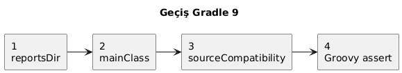
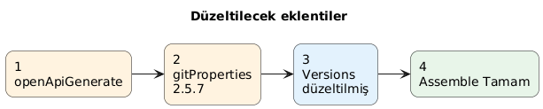
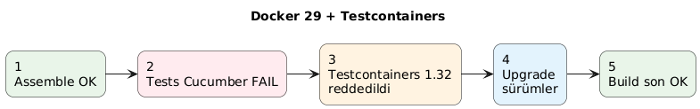
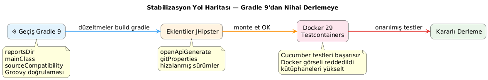
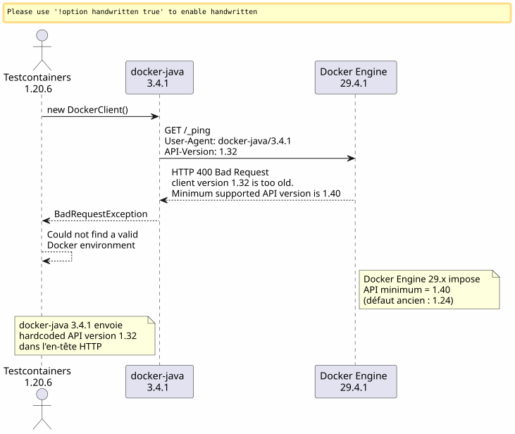
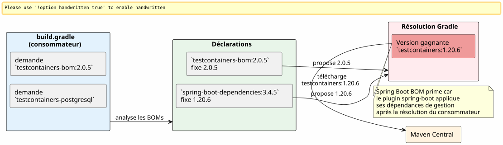
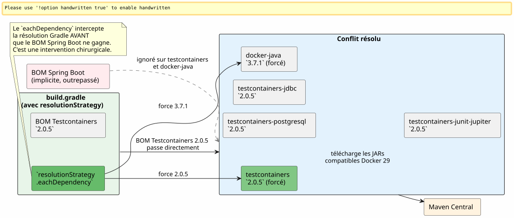

Quand Gradle 9, Docker 29 et Testcontainers se mettent la rate au court-bouillon : debugging d'un build JHipster
Yayınlandı: 25 April 2026
- Sahne: bir JHipster projesi, artık yüklenmeyen bir build
- Hata 1: hayalet değişken `reportsDir
- Hata 2:
main = "…"artık Gradle 9’da yok - Hata 3:
sourceCompatibilityartık bir proje özelliği değil - Hata 4: üç işlenenli Groovy assertion’ı
- Hata 5: örtük bağımlılık
compileKotlin→ `openApiGenerate - Hata 6:
generateGitProperties,FilterOutputStream.write()üzerinde çöküyor - Sonunda: Testcontainers sahneye çıkıyor
- Aşama 1: docker-java yolu
- 2. Aşama: web araması ve GitHub gezinti yolu
- Aşama 3: Yeniden adlandırılmış artefaktların tuzağı
- Aşama 4: çözünürlüğü zorla
- Nihai sonuç
- Düzeltmelerin özet tablosu
- Sonuç
Daha önce şu anı yaşadınız: basit bir`./gradlew build`Günde yüz kez çalıştırdığınız şey aniden hiç görülmemiş bir hatayla çökmeye mi başlıyor? Bunu on bir ardışık hatayla çarpın, üzerine bolca Docker Engine 29 uyumsuzluğu ekleyin, on yıldır kullandığımız API’leri ortadan kaldıran Gradle 9’dan da bir tutam serpin. İşte eksiksiz seyir defteri.
Amaç: uyumsuzluklar dizisini göstermek.

Amaç: bozuk eklentileri izole etmek.

Amaç: çalışma zamanı sorunu.


Sahne: bir JHipster projesi, artık yüklenmeyen bir build
Proje`edster`2024’te oluşturulmuş bir JHipster uygulamasıdır. Kök derleme betiği`build.gradle`aylar boyunca sabit kaldı. Sonra sürümü yükseltmeye karar veriyoruz:
| Bileşen | Hedef sürüm |
|---|---|
Gradle |
9.4.1 |
Java |
21.0.11-tem (Eclipse Temurin) |
JHipster |
8.x (çerçeve`tech.jhipster:jhipster-framework:8.11.0`) |
Spring Boot |
3.4.5 |
Kotlin |
2.3.0 |
Docker Engine |
29.4.1 (API 1.54) |
Java sürüm değişikliği SDKMAN üzerinden yapılır:
sdk use java 21.0.11-temİlk başlatma:
$ ./gradlew build --no-daemon
FAILURE: Build failed with an exception.
* Where:
Build file '/home/.../edster/build.gradle' line: 18
* What went wrong:
An exception occurred applying plugin request [id: 'jhipster.cucumber-conventions']
> Failed to apply plugin 'jhipster.cucumber-conventions'.
> Could not create task ':cucumberTest'.
> Could not create task ':consoleLauncherTest'.
> Could not set unknown property 'reportsDir' for task ':consoleLauncherTest'Build script’in yüklenmesini bile geçemiyoruz. Sorun … içinde`buildSrc/src/main/groovy/jhipster.cucumber-conventions.gradle`.
Hata 1: hayalet değişken `reportsDir
Senaryo`jhipster.cucumber-conventions.gradle`içerir:
tasks.register('consoleLauncherTest', JavaExec) {
dependsOn(testClasses)
String cucumberReportsDir = file("$buildDir/reports/tests")
outputs.dir(reportsDir) // <-- reportsDir n'existe PAS
classpath = sourceSets["test"].runtimeClasspath
main = "org.junit.platform.console.ConsoleLauncher"
// ...
}Tanımlanan değişken`cucumberReportsDir`. Kullanılan`reportsDir`-- hiçbir yerde tanımlanmayan.
Düzeltme:`outputs.dir(cucumberReportsDir)`
Hata 2: main = "…" artık Gradle 9’da yok
Anında hatırlatma:
Could not set unknown property 'main' for task ':consoleLauncherTest' of type org.gradle.api.tasks.JavaExec.Gradle 9 özelliği kaldırıyor`main`lehine`mainClass`görevler üzerine`JavaExec`.
Düzeltme:`mainClass = "org.junit.platform.console.ConsoleLauncher"`
Hata 3: sourceCompatibility artık bir proje özelliği değil
Yeni hata:
Could not set unknown property 'sourceCompatibility' for root project 'edster' of type org.gradle.api.Project.Kök betiğin şunları vardı:
sourceCompatibility=17
targetCompatibility=17Gradle 9 bu özellikleri kök düzeyinde kaldırır. Bunlar bir blok içinde yer almalıdır.java.
Düzeltme :
java {
sourceCompatibility = JavaVersion.VERSION_21
targetCompatibility = JavaVersion.VERSION_21
}Hata 4: üç işlenenli Groovy assertion’ı
Eski script şunları içeriyordu:
assert System.properties["java.specification.version"] == "17" || "21" || "24"Groovy’de,"21" et "24"`truthy string’lerdir. İfade şuna çözümlenir(… == "17") || true || true`, bu her zaman doğrudur — ancak sözdizimi istenen katı doğrulama için geçersizdir.
Düzeltme :
assert System.properties["java.specification.version"] in ["17", "21", "23", "24"]Hata 5: örtük bağımlılık compileKotlin → `openApiGenerate
Derleme ilerliyor. Kotlin derlemesi başarılı. Sonra:
Task ':compileKotlin' uses this output of task ':openApiGenerate'
without declaring an explicit or implicit dependency.Gradle 9, görevler arasındaki örtük bağımlılıkları reddeder. Madem ki`compileKotlin`tarafından oluşturulan kaynakları okur`openApiGenerate`, bağlantının bildirilmesi gerekir.
Düzeltmeiçinde`build.gradle` :
afterEvaluate {
tasks.named("compileKotlin").configure {
dependsOn(tasks.named("openApiGenerate"))
}
}Le `afterEvaluate`gereklidir çünkü`openApiGenerate`bir uzantıdır (OpenAPI Generator eklentisi) ve yapılandırma aşamasında doğrudan erişilebilen bir görev değildir.
Hata 6: generateGitProperties, FilterOutputStream.write() üzerinde çöküyor
Java derlemesi geçer. Kaynaklar işlenir. Sonra:
> Task :generateGitProperties FAILED
No signature of method: java.io.FilterOutputStream.write() is applicable for argument types: (Integer) values: [103]Eklenti`gradle-git-properties`version 2.5.0, Java 21 / Gradle 9 ile uyumlu değil. Dahili bir hata çağırmaya çalışıyor`write(int)`Groovy aracılığıyla onu kapatan bir akış üzerinde.
Düzeltmeiçinde`gradle.properties` :
gitPropertiesPluginVersion=2.5.7Sonunda: Testcontainers sahneye çıkıyor
Buraya kadar, bu saf "build script debugging" idi. Her hata, build script’lerinde Gradle 9 veya Java 21 uyumsuzluğuydu. Yukarıdaki altı düzeltmeden sonra,`./gradlew assemble`başarıyla geçer.
Ama`./gradlew build`testleri de çalıştırır ve Cucumber testleri geçici bir PostgreSQL başlatmak için Testcontainers kullanır.
Could not find a valid Docker environment.
EnvironmentAndSystemPropertyClientProviderStrategy: failed with exception BadRequestException
(Status 400: {"message":"client version 1.32 is too old. Minimum supported API version is 1.40"}
UnixSocketClientProviderStrategy: failed with exception BadRequestException
(Status 400: {"message":"client version 1.32 is too old. Minimum supported API version is 1.40"}Testcontainers, Docker ile iletişim kuramıyor. İki farklı strateji (ortam değişkenleri + Unix soketi) aynı hatayla başarısız oluyor.

Aşama 1: docker-java yolu
İlk refleks: Testcontainers tarafından kullanılan Java Docker istemcisi API sürümünü gönderir`1.32`HTTP el sıkışmasında, ancak Docker Engine 29.4.1 en az … gerektirir`1.40`. Sorun istemci tarafında, daemon tarafında değil.
Testcontainers 1.20.6 tarafından çözümlenen docker-java sürümünün doğrulanması:
$ ./gradlew dependencies --configuration testRuntimeClasspath | grep docker-java
+--- com.github.docker-java:docker-java-api:3.4.1
+--- com.github.docker-java:docker-java-transport:3.4.1docker-java 3.4.1, Testcontainers 1.20.6’dan kalma. docker-java’nın en son herkese açık sürümü 3.5.1. Sürüm yükseltmesini şu yolla zorlamayı deneyelim:`resolutionStrategy`blokta`configurations` de build.gradle :
configurations {
all {
resolutionStrategy.eachDependency { details ->
if (details.requested.group == "com.github.docker-java"
&& details.requested.name.startsWith("docker-java")) {
details.useVersion("3.5.1")
}
}
}
}Build yeniden başlatıldı. Aynı hata:`client version 1.32 is too old`.
Gradle önbelleği kontrolü: JAR’lar yeniden indirildi, ancak hata devam ediyor. docker-java 3.5.1 hâlâ gönderiyor`1.32`. Bu sürüm bu nedenle Docker Engine 29.4.1 için YETERLİ DEĞİLDİR.
Arındırma eylemi: Gradle önbelleğini tamamen temizlemek, sadece emin olmak için:
rm -rf ~/.gradle/caches
rm -rf /path/to/project/.gradleTemizleme sonrası tam yeniden başlatma. Aynı hata.
2. Aşama: web araması ve GitHub gezinti yolu
docker-java 3.5.1 yetersiz. Geriye sadece birinin bu tam sorunla karşılaşıp karşılaşmadığını araştırmak kalıyor.
testcontainers-java ve docker-java sorunlarına yönelik hedefli arama:
site:github.com/testcontainers "client version 1.32 is too old"
site:github.com/docker-java "client version 1.32" Docker Engine 29İlk anlık sonuçlar:
-
testcontainers-java#11210—
[Bug]: client version 1.32 is too old. Minimum supported API version is 1.44 -
testcontainers-java#11212—
[Bug]: Docker 29.0.0 could not find a valid Docker environment -
testcontainers-java#11491—
[Bug]: Incompatibility in Ubuntu Github runners with Docker Engine 29.1.*
Gezinti yolu açık: Docker Engine 29.x, minimum API sürümünü şu değerden yükseltti`1.24`(eski kusur) -a`1.40`. Testcontainers 1.20.x, API sürümünü göndererek müzakere eden docker-java 3.4.x’i kullanır`1.32`. Daemon kibarca ama kararlı bir şekilde reddeder.
#11491 numaralı issue’da bir bakımcı şöyle yanıtlıyor:
_ Merhaba, GH runner’da engine 29.1 ile 2.0.3 sürümüyle çalışan bir projem var ve çalışıyor. Hepiniz lütfen bir sürüm çakışması olmadığını kontrol edebilir misiniz? Lütfen, tüm modüllerin şununla ön eklenmiş olduğunu unutmayın`testcontainers-. Yani, 2.x sürümünden başlayarak …'dan …'a geçtik`postgresql to testcontainers-postgresql _
Bu yanıt içeririki kritik bilgi:
-
Testcontainers 2.0.3+ sorunu çözer
-
Modüller … olmuşturtestcontainers-` önekiyle yeniden adlandırılmış
Aşama 3: Yeniden adlandırılmış artefaktların tuzağı
Yeniden adlandırma sert. Testcontainers 2.x’te, eski adlardan hiçbiri artık bu ad altında çalışmıyor:
| Eski ad (1.x) | Yeni ad (2.x) |
|---|---|
|
|
|
|
|
|
|
değişmemiş |
İlk deneme: Testcontainers 2.0.5 BOM’unu ve yeni artifact adlarını içine uygulamak`build.gradle`.
dependencies {
testImplementation platform("org.testcontainers:testcontainers-bom:2.0.5")
testImplementation "org.testcontainers:testcontainers-postgresql"
testImplementation "org.testcontainers:testcontainers-jdbc"
testImplementation "org.testcontainers:testcontainers-junit-jupiter"
testImplementation "org.testcontainers:testcontainers"
}./gradlew build
FAILURE: Could not find org.testcontainers:jdbc:2.0.5.
Could not find org.testcontainers:junit-jupiter:2.0.5.testcontainers-bom’un BOM’u yeterli değil.Neden? Çünkü Spring Boot 3.4.5 kendi bağımlılık yönetimi BOM’unu sunar (spring-boot-dependencies) kikazanırgeçişli çözümlemede Testcontainers BOM’u üzerinde. Spring Boot sabitler`testcontainers` à 1.20.6, ve dolayısıyla Spring Boot BOM’unda açıkça yer almayan tüm artifact’lar (yeni olanlar gibi`testcontainers-*) eski adlara çözümlenir`1.20.6-- bu sürümde artık bulunmayan.
İncelerken`dependencies --configuration testRuntimeClasspath`, bulunur:
+--- org.testcontainers:testcontainers -> 1.20.6 (*)
| \--- org.testcontainers:testcontainers:2.0.5 -> 1.20.6Le →`yerine koymayı belirtir: Testcontainers 2.0.5 talep ediliyor, ancak Spring Boot zorluyor`1.20.6.

Aşama 4: çözünürlüğü zorla
Strateji ikili hale gelir:
-
docker-java’yı 3.7.1 sürümüne zorlayın (Docker Engine 29 ile uyumlu olduğu test edilmiştir)
-
Spring Boot BOM’unu atlatarak Testcontainers core’u 2.0.5’e zorla

Son düzeltmeiçinde`build.gradle` :
configurations {
all {
resolutionStrategy.eachDependency { details ->
if (details.requested.group == "com.github.docker-java"
&& details.requested.name.startsWith("docker-java")) {
details.useVersion("3.7.1")
}
if (details.requested.group == "org.testcontainers"
&& details.requested.name == "testcontainers") {
details.useVersion("2.0.5")
}
}
}
}
dependencies {
testImplementation platform("org.testcontainers:testcontainers-bom:2.0.5")
testImplementation "org.testcontainers:testcontainers-jdbc"
testImplementation "org.testcontainers:testcontainers-junit-jupiter"
testImplementation "org.testcontainers:testcontainers-postgresql"
testImplementation "org.testcontainers:testcontainers"
// ... autres dépendances Spring Boot
}Le `resolutionStrategy.eachDependency`BOM’u aşmanın tek yoludur`spring-boot-dependencies`Spring Boot eklentisi tarafından yönetilir. Eşitlik testi üzerinde`details.requested.name == "testcontainers"`kasıtlı olarak kısıtlayıcıdır: yalnızca core modülünü zorluyoruz. Modüller`testcontainers-*`açıkça bildirdiğimiz Testcontainers 2.0.5 BOM’unu izlerler.
Nihai sonuç
$ ./gradlew build --no-daemon
> Task :consoleLauncherTest
[2 containers found]
[2 containers started]
[2 containers successful]
BUILD SUCCESSFUL in 1m 16sTestcontainers 2.0.5 + docker-java 3.7.1 nihayet PostgreSQL konteynerlerini Docker Engine 29.4.1 üzerinden oluşturmayı başarıyor. Nihai iş hatası (Cucumber testindeki HTTP 500), build script’inden tamamen bağımsız bir uygulama sorunudur.
Düzeltmelerin özet tablosu
| # | Dosya | Sorun | Düzeltme |
|---|---|---|---|
1 |
|
Değişken`reportsDir`mevcut olmayan |
|
2 |
|
`main`kullanımdan kaldırılmış Gradle 9 |
|
3 |
|
`sourceCompatibility`Gradle 9’da top-level yasak |
Blok`java { sourceCompatibility = JavaVersion.VERSION_21 }` |
4 |
|
Sözdizimsel olarak geçersiz Groovy assertion’ı |
|
5 |
|
Örtük bağımlılık`compileKotlin`→ |
|
6 |
|
`gitPropertiesPluginVersion`Java 21 ile uyumsuz |
|
7 |
Gradle önbelleği |
docker-java 3.5.1 test edildi, çözüldü ancak yetersiz |
Temizleme + docker-java 3.7.1’e geçiş |
8 |
|
Testcontainers 1.20.6, Docker Engine 29 ile uyumsuz |
Testcontainers 2.0.5 + önek zorlaması`testcontainers-*`+ resolutionStrategy, Spring Boot BOM’a karşı |
Sonuç
JHipster/Gradle derlemeniz Gradle 9 + Docker Engine 29 sürümüne yükseltildikten sonra çökerse, hatalar iki kategoriye ayrılır:
Derleme betiği hataları(ilk 6’sı) : Gradle 9, yıllardır çalışan özellikleri ve sözdizimlerini kaldırıyor (sourceCompatibility=, main =, reportsDir). Yeni API’yi öğrendikten sonra bunlar mekanik geçişlerdir.
Docker çalışma zamanı hataları(son 2): Docker Engine 29.4.1, API < 1.40 istemcilerini dışlar. Spring Boot 3.4.5 tarafından zorunlu kılınan Testcontainers 1.20.6, 1.32 gönderen docker-java 3.4.1’i kullanır. Sorunu yalnızca Testcontainers 2.0.5 + docker-java 3.7.1 çözer; artifact’ların yeniden adlandırılması ve sürüm zorlaması ile`resolutionStrategy.eachDependency`Spring Boot’un örtük BOM’unu atlatmanın tek yolu olarak.
Projenin kök dizinindeki Gradle derleme betiği artık temiz.`./gradlew build`Java 21, Gradle 9.4.1, Spring Boot 3.4.5 ve Docker Engine 29.4.1’e geçiyor.